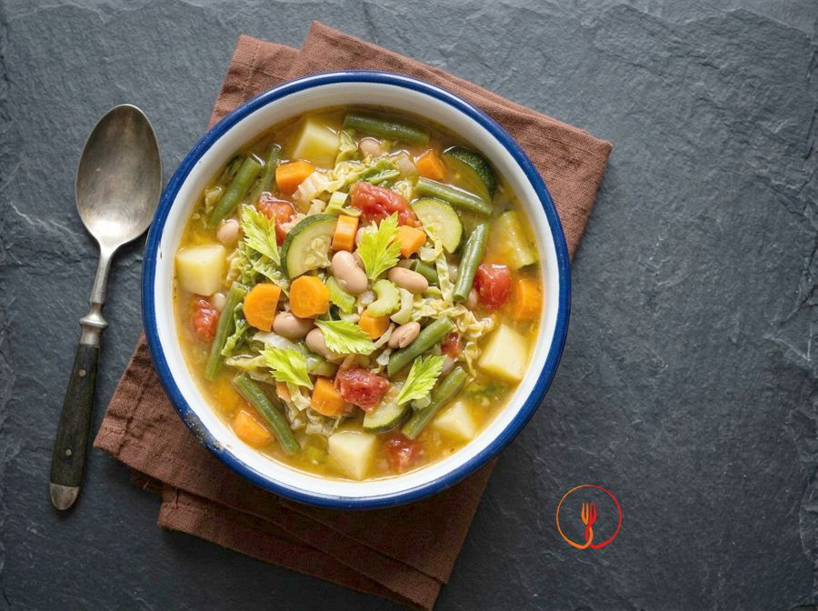

Vegetable Minestrone
Ingredients
- potatoes200 g
- carrots150 g
- zucchini150 g
- green beans100 kg
- savoy cabbage100 g
- pre-cooked beans150 g
- ripe tomatoes100 g
- celery stalk1
- small onion1
- water1.2 lt
- extra virgin olive oil20 ml
- Salt and pepperto taste
- grated parmesan cheese (optional)30 g
Allergens
Milk, Celery
May contain traces of: Gluten, Soy.
Method
- Wash all the vegetables thoroughly. Peel the potatoes and carrots, trim the ends of the green beans and cut each ingredient into similar-sized cubes.
- Finely chop the onion and celery. Transfer them to a large pot with the oil and let them soften for about 5 minutes.
- Add the carrots, potatoes, and green beans. Stir to season the vegetables with the sautéed base.
- Add the chopped tomatoes and pour in the water-
- Bring to a boil, lower the heat, and cook for about 20 minutes with the lid slightly open.
- Add the zucchini, the savoy cabbage cut into strips, and the pre-cooked beans. Continue cooking for another 15–20 minutes.
- Adjust salt and pepper and check that the vegetables are soft but not completely falling apart.
- Turn off the heat, add a drizzle of raw oil, and serve hot, optionally with grated parmesan.
Chef's tips
Tips, mistakes and alternatives:
- Cut the vegetables uniformly to achieve even cooking.
- Do not add all the vegetables at the same time: the more delicate ones require less time.
- For a creamier minestrone, blend a portion of the vegetables and put it back into the pot.
- You can add pumpkin, cauliflower, spinach, swiss chard, or peas according to the season.
- To turn it into a single dish, add 100–120 g of pasta or rice, adjusting the liquid and cooking times.
- You can use dried legumes, but they must be soaked and cooked separately according to specific instructions.
Nutrition facts (estimate)
| Per serving (520 g) | Per 100 g | |
|---|---|---|
| Energy | 816 kJ / 195 kcal | 159 kJ / 38 kcal |
| Protein | 8.0 g | 1.5 g |
| Carbohydrates | 24 g | 4.7 g |
| of which sugars | 7.0 g | 1.3 g |
| Fat | 7.3 g | 1.4 g |
| of which saturates | 2.5 g | 0.5 g |
| Fibre | 7.4 g | 1.4 g |
| Salt | 1.2 g | 0.2 g |
AI estimates based on average CREA / USDA data: indicative only, not a substitute for medical or dietitian advice.
Open the recipe in the app for the shopping list, ingredient sheets and nearby shops.